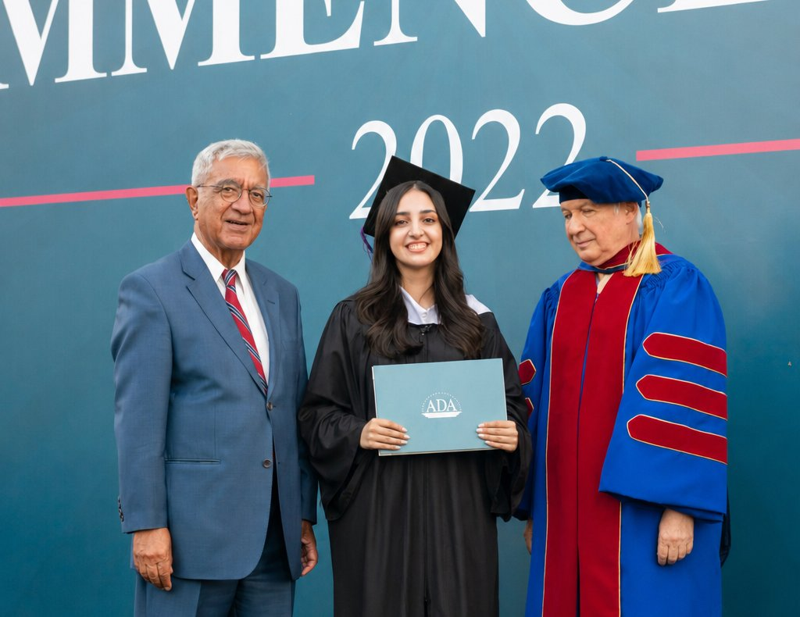
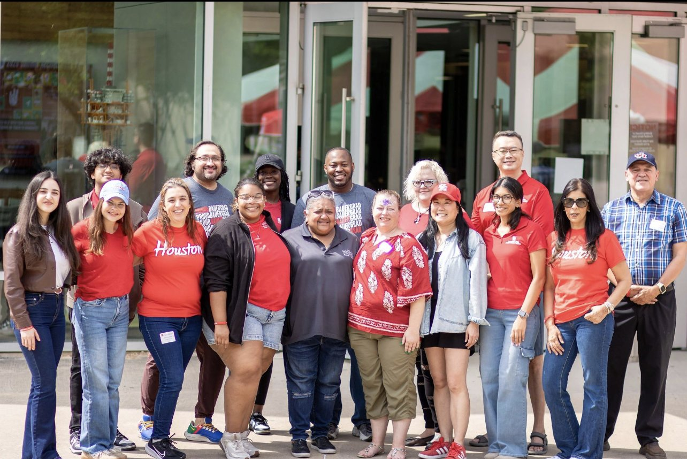
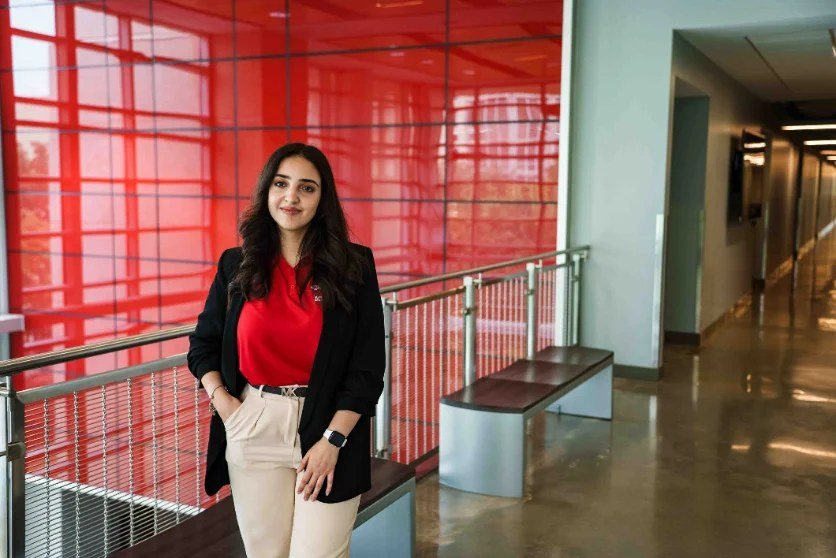

A bit about how I got here.
People who work with me tend to say the same thing: I show up positive, and I show up to help. Grab a coffee — here's the path that got me here.
Growing up in Baku
I grew up in Baku always asking why things worked the way they did — and jumping in to help wherever I could. That combo followed me into everything I've done since.
Learning the technical side
I studied Information Technology for my Bachelor's, which is where I first learned how software actually gets built. A technical foundation I still lean on — I just didn't know yet I'd land on the product side of it.

Four years, four bets on myself
First stop out of university: Product Specialist at ATL Tech, running an enterprise SaaS platform. From there, OSFD — a blockchain startup — taught me to move fast with ambiguity. That momentum carried into co-founding DocPeak with friends, a healthtech startup tackling patient queue and clinic management from the ground up, then into freelance product work on a blockchain wallet and trading platform.
Moving to Houston
To accelerate that growth, I moved to Houston for the University of Houston's MS in Management Information Systems — a deliberate bet on rounding out my product instincts with real business fundamentals. Currently holding a 4.0 GPA while making the most of being on campus.

Getting involved, and helping others do the same
I'm a Graduate Assistant for Bauer's admissions team, a Bauer Ambassador, and part of the Product Management Association at UH. This semester I'm stepping up as President of the Bauer Ambassadors, pushing for new workshops and professional development — because I want the people coming up behind me to have more support than I did.
Where I'm headed
When I graduate, I want to be the kind of Associate/Product Manager people bring their hardest, most ambiguous problems to — someone genuinely useful, positive under pressure, and comfortable bridging the technical and business sides instead of picking one.
